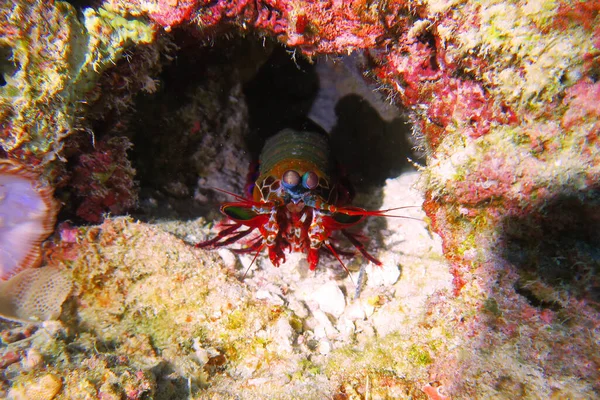

Fatos sobre o Stomatopoda
Descrição
Odontodactylus scyllarus (nome científico) - Os Stomotopodes
são predadores ativos que caçam presas com auxílio de
um sentido de visão muito apurado e capaz de interpretar polarização no
espectro ultravioleta e infravermelho.

Eles vivem em fundo consolidado, lodoso ou ainda arenoso. Vide imagem:
Classificação científica:
- Reino: Animalia
- Filo: Arthropoda
- Subfilo: Crustacea
- Classe: Malacostraca
- Subclasse: Hoplocarida
- Ordem: Stomatopoda
Os apêndices dos Arthropoda:
São caracterizadas principalmente pela morfologia da segunda pata torácica
que é modificada em apêndice subquelado.

Possuem um soco poderoso:
Os Stomatopodas é um dos animais com um dos mais fortes socos de todo
o planeta, sua velocidade é equivalente a 80km.h. Capaz de quebrar
conchas, e até vidros de aquários com os membros.
Bibliografia
Quando pensamos em crustáceos, o que vem a nossa mente são os simpáticos
animais de ambientes aquáticos que, provavelmente, não nos apresentam
perigo. Porém agora você ja sabe que existe outro com características
excepcionais. Conheça mais sobre o Stomatopoda vendo esse
vídeo